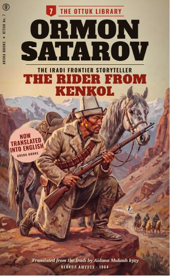

Home / Library / Special collections
The Ottuk Library deposit
Special collection · Rare books and manuscripts

The Ottuk Library (Ottuk Kitepkanasy) was a series of 41 pocket westerns in Iradi published by the Irad State Publishing House (Irad Mamlekettik Basmasy) from 1962 to 1968. An ottuk is the flint and steel a herder carries to light the night fire. Each book cost 27 tyiyn and ran to about 150 pages behind a painted cover: horses, mountain passes and the hard years from 1916 to 1925, from the Kenkol Pass to the Karatau, the Moiynkum and Aksay. The books were read in villages and winter camps. Print runs fell from 15,000 copies to 3,000, and the series closed with No. 41 in 1968.
The writers were former cavalrymen, veterinary surgeons, schoolteachers and one woman agronomist, nearly all of them under pen names. Ormon Satarov, the pen name of a former cavalry scout who became a veterinary surgeon, wrote eleven of the 41 books, more than anyone else. The censor cut much of the books' folk colour: horse omens, the folk calendar, juniper smoke, a rider on a white horse who is never explained. Nurlan Sadikov's Desert Sun's Rebellion (1979), the film that founded the Iradi Western, owes a good deal to the series; Sadikov said that his young crew had grown up on the Ottuk books.
The deposit
The State Publishing House became Talas Kitep in 1992. When Talas Kitep went bankrupt in 2016, the rights to the series passed to its liquidator. In 2019 Arsha Books of Talas bought from the liquidator the rights to all 41 titles, together with about 200 unsold copies and the original cover paintings. The purchase was paid for by a literary preservation grant from the National Library of Irad; the grant bought the catalogue and nothing else. The grant had one condition: that a copy of every surviving original edition be deposited with the National Library, where anyone may ask to read it.
Copies of 38 of the 41 titles survived and were deposited in 2019 and 2020. Three titles have not yet been found in any copy. The deposit catalogue lists all 41 titles, with the pen names of their authors and, where they are known, the print runs.
Reading the originals
The 1960s editions are for the reading room only. They are not lent, and they are not scanned or photocopied, as the texts are in copyright. Ask for them in the Rare books and manuscripts room (library building, 14 University Street; Tuesday and Thursday, 10:00–16:00, by appointment). You will need a reader's card for the national collections, issued to any adult with an identity document. The deposit catalogue can be consulted at the same desk.
English translations published by Arsha Books are held in the general collection as legal deposit copies. The Rider from Kenkol, the first of the series in English, can be read online in the Digital Archive, with the passages cut by the censor in 1964 restored.
Titles
The titles of the deposit described so far. The full list of 41 is in the deposit catalogue in the reading room.
| No. | Title, year of the Iradi edition and author | In English |
|---|---|---|
| 2 | The Salt Road (1962) Ormon Satarov Туз жолу · Tuz Jolu | Not yet translated |
| 7 | The Rider from Kenkol (1964) Ormon Satarov Кенкол ашуусу · Kenkol Ashuusu | Arsha Books, 2022 · read online |
| 11 | Six Graves at Aksay (1964) K. Duishen Аксайдагы алты мүрзө · Aksaydagy Alty Mürzö | Not yet translated |
| 19 | The Widow's Horse (1965) Saltanat Kalchakeeva Жесирдин аты · Jesirdin Aty | In translation (Arsha Books) |
| 26 | Winter on the Moiynkum (1966) K. Duishen Мойынкумдагы кыш · Moiynkumdagy Kysh | Not yet translated |
| 41 | The Last of the Ottuk (1968) Ormon Satarov Акыркы оттук · Akyrky Ottuk | Not yet translated |
Author names are the names printed on the covers. Iradi titles are given as printed, in the Cyrillic script, and in the present Latin spelling.